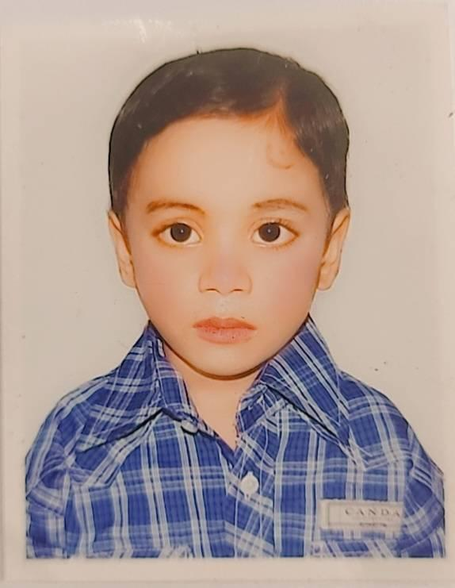
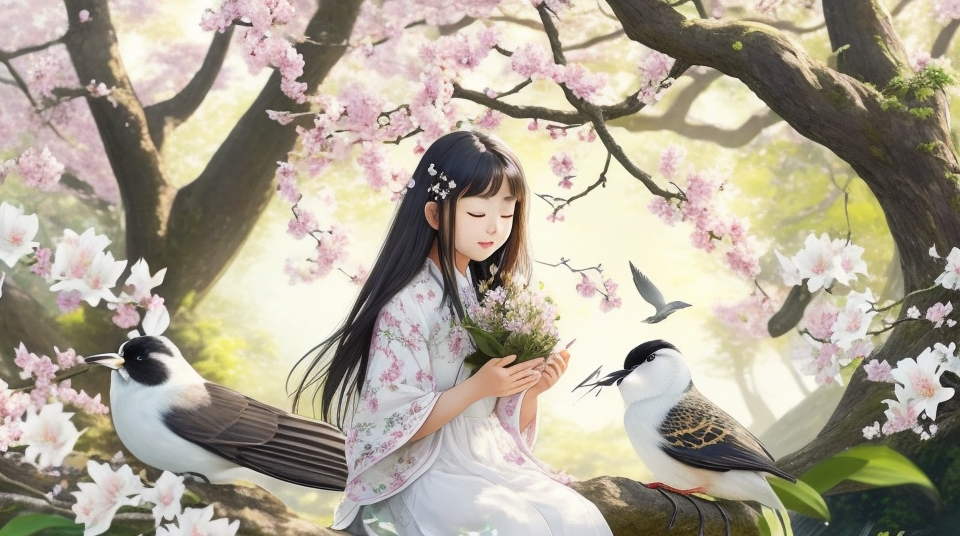
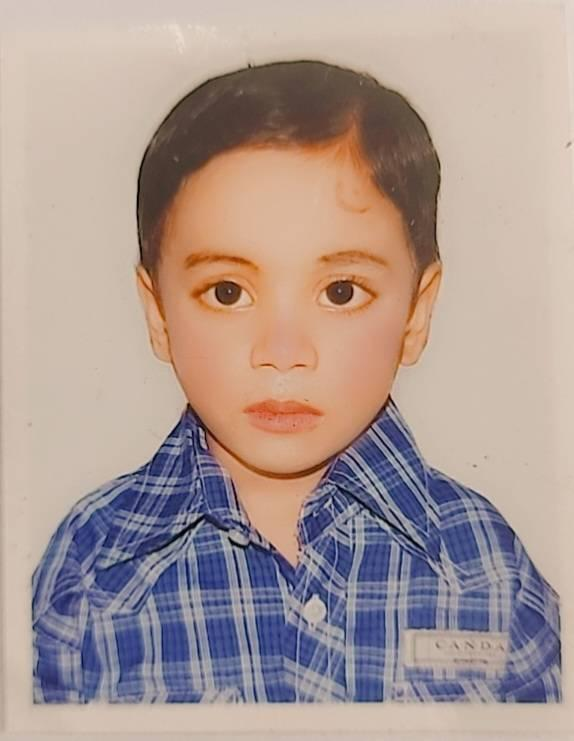
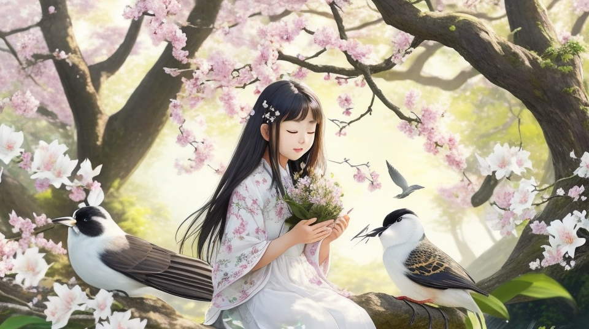

Ami tomy valobase
chero dine tomer akash tomar batas amir prana lage shoder moto
Hi im Akash. Hi im akash.
raguler text this is mine mine raguler text


The Mughal Empire controlled Bengal by the 17th century. During the reign of Emperor Akbar, the Bengali agrarian calendar was reformed to facilitate tax collection.
The Mughals established Dhaka as a fort city and commercial metropolis.
It was the capital of Bengal Subah for 75 years.[82] The city was home to many leaders of the Mughal imperial family, nobility, bureaucracy and military.
In 1666, the Mughals expelled the Arakanese from the port of Chittagong. Mughal Bengal attracted foreigntraders for its muslin and silk goods, and the Armenians were a notable merchant community.
A Portuguese settlement in Chittagong flourished in the southeast, and a Dutch settlement,in Rajshahi existed in the north. Bengal accounted for 40% of overall Dutch imports from Asia; including more than 50% of textiles and around 80% of silks.
[83] The Bengal Subah, described as the Paradise of the Nations,[84] was the empire'swealthiest province, and a major global exporter,[83][85][86] a notable centre of worldwide
industries such as muslin, cotton textiles, silk,[48] and shipbuilding.[87] Its citizens also enjoyed one of the world's most superior living standards.[88]
HELLO
অধ্যায় থেকে লাইভ/রেকর্ডেড ক্লাস সিলেক্ট করে দেখা শুরু করো : Shikho.com
 


